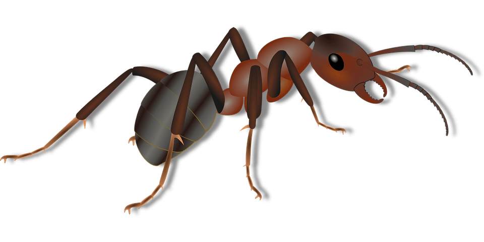
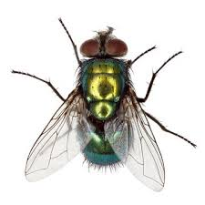
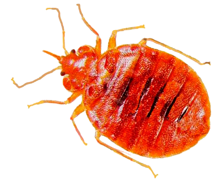
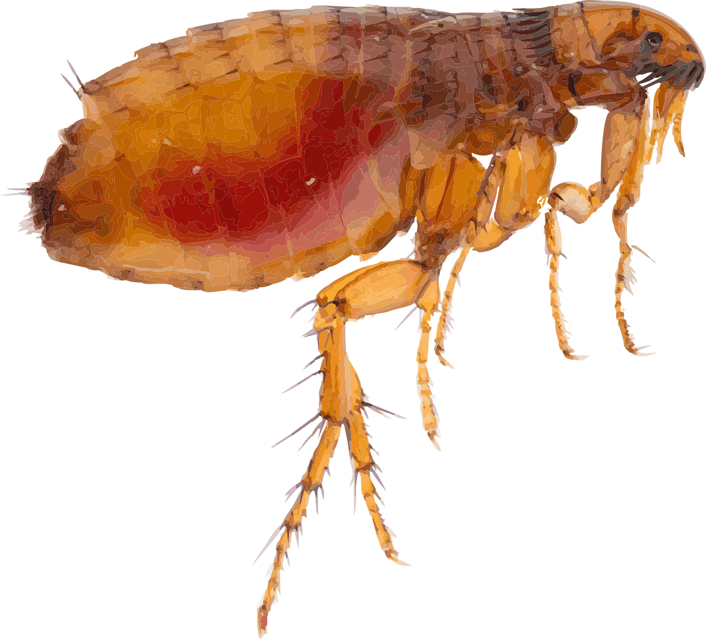
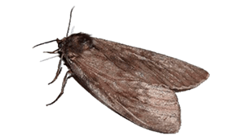

Что такое дезинcекция
Процедура уничтожения любых насекомых, чье соседство с человеком
является
нежелательным и вредоносным. Членистоногие могут быть возбудителями
многих
инфекционных заболеваний, также могут навредить не только здоровью
человека, но
и продовольственным запасам, материалам и растительным культурам.
Способы воздействия на насекомых различны и осуществляется
специалистами-дезинфекторами. При ежемесячном обслуживании объекта,
поступление
жалоб на признаки насекомых, выезд специалистов и истребление
насекомых
осуществляется экстренно, и без дополнительной платы. В случае меньшей
периодичности обслуживания компания «Дезэффект» дает гарантию на
каждую
обработку до 30 дней.
Методы дезинфекции
Физический метод -
Предполагает использование для уничтожения членистоногих высоких или
низких
температур, воды в виде пара, сухого или увлажненного горячего
воздуха.
Химический метод - Данный способ предполагает использование специальных химических препаратов: инсектицидов, акарицидов, ларвицидов, овицидов.
Биологический - У некоторых членистоногих в природе существуют естественные враги. Это не только насекомые-хищники, а и вирусы, бактерии, грибы, гельминты и простейшие, которые не опасны для человека, но вызывают у членистоногих заболевания, приводящие к их массовой гибели.
Химический метод - Данный способ предполагает использование специальных химических препаратов: инсектицидов, акарицидов, ларвицидов, овицидов.
Биологический - У некоторых членистоногих в природе существуют естественные враги. Это не только насекомые-хищники, а и вирусы, бактерии, грибы, гельминты и простейшие, которые не опасны для человека, но вызывают у членистоногих заболевания, приводящие к их массовой гибели.



«Дезэффект» оказывает следующие
услуги
по дезинcекции:

Регулярное обслуживание предприятий

Проведение дезинсекции по разовым заявкам

Комплекс по периодической дератизации и
дезинсекции – наиболее востребованные
услуги, дающие возможность избавиться от грызунов и насекомых
одномоментно